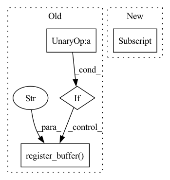

Pattern ID :39943
Before Change
def forward(self, *dimensions):
device = self.device
if not exists(self.rel_pos) or not self.cache_rel_pos :
positions = [torch.arange(d, device = device) for d in dimensions]
grid = torch.stack(torch.meshgrid(*positions, indexing = "ij"))
grid = rearrange(grid, "c ... -> (...) c")
rel_pos = rearrange(grid, "i c -> i 1 c") - rearrange(grid, "j c -> 1 j c")
if self.log_dist:
rel_pos = torch.sign(rel_pos) * torch.log(rel_pos.abs() + 1)
self.register_buffer("rel_pos" , rel_pos, persistent = False)
rel_pos = self.rel_pos.float()
for layer in self.net:After Change
// now select the bias for each unique relative position combination
bias = bias[rel_dist_indices]
return rearrange(bias, "i j h -> h i j")
// helper classes
In pattern: SUPERPATTERN
Frequency: 4
Non-data size: 4
Instances Fragment ID: 113540165
Project Name: lucidrains/make-a-video-pytorch
Commit Name: b6e0a17c5488b923d884272f7e46170352b0f0d5
Time: 2023-03-18
Author: lucidrains@gmail.com
File Name: make_a_video_pytorch/make_a_video.py
M Class Name: ContinuousPositionBias
N Class Name: ContinuousPositionBias
M Method Name: forward(1)
N Method Name: forward(1)
M Parent Class: nn.Module
N Parent Class: nn.Module
M File Name: make_a_video_pytorch/make_a_video.py
N File Name: make_a_video_pytorch/make_a_video.py
M Start Line: 110
M End Line: 126
N Start Line: 105
N End Line: 142
Before Change
@torch.no_grad()
def forward(self, x):
if not hasattr(self, "queue") :
self.register_buffer("queue" , x)
else:
self.queue = torch.cat((self.queue, x))[-self.queue_size :]
return self.queue
After Change
@torch.no_grad()
def forward(self, x):
self.queue = torch.cat((self.queue, x))[-self.max_size :]
self.queue_size = np.minimum(self.queue_size + x.shape[0] , self.max_size)
return self.queue[-self.queue_size :]
@torch.no_grad() Fragment ID: 113540166
Project Name: jgraving/cne
Commit Name: 37eb84c869c9ad898c666f8dbce65d875f3ea079
Time: 2022-05-26
Author: jgraving@gmail.com
File Name: selfsne/neighbors.py
M Class Name: Queue
N Class Name: Queue
M Method Name: forward(2)
N Method Name: forward(2)
M Parent Class: Module
N Parent Class: Module
M File Name: selfsne/neighbors.py
N File Name: selfsne/neighbors.py
M Start Line: 29
M End Line: 33
N Start Line: 31
N End Line: 33
Before Change
super(FixedRevRNN, self).__init__()
if input_count <= 0:
raise UserWarning("No input count given")
if hidden_features % 2:
raise UserWarning(f"Ignoring uneven hidden feature and proceeding as if equal {hidden_features // 2 * 2}")
self.return_sequences = return_sequences
self.delay = delay
self.input_count = input_count
hidden_features = hidden_features // 2
self.hidden_features = hidden_features
self.linear_param0 = torch.nn.Parameter(torch.zeros((depth, 3 * hidden_features, hidden_features)))
self.linear_param1 = torch.nn.Parameter(torch.zeros((depth, 3 * hidden_features, hidden_features)))
self.out_linear = torch.nn.Parameter(torch.randn((1, 2 * hidden_features ** 2, out_features)))
self.register_buffer("hidden_state" , torch.zeros(1, 2 * hidden_features, hidden_features))
self.register_buffer("embedding", torch.ones((input_cases, hidden_features, hidden_features)))
for idx in range(depth):
for sub_idx in range(3):After Change
hidden_state = torch.randn(1, 2 * features_sqrt, features_sqrt)
hidden_state[0, :features_sqrt] = hidden_state[0, :features_sqrt].qr().Q
hidden_state[0, features_sqrt:] = hidden_state[0, features_sqrt:] .qr().Q
self.register_buffer("hidden_state", hidden_state.clone())
self.depth = depth
Fragment ID: 113540161
Project Name: homebrewnlp/homebrewnlp
Commit Name: e6bfdfa67ff9b5477696711d7d570685448ee141
Time: 2021-06-20
Author: 39779310+ClashLuke@users.noreply.github.com
File Name: module.py
M Class Name: FixedRevRNN
N Class Name: FixedRevRNN
M Method Name: __init__(8)
N Method Name: __init__(8)
M Parent Class: torch.nn.Module
N Parent Class: torch.nn.Module
M File Name: module.py
N File Name: module.py
M Start Line: 101
M End Line: 127
N Start Line: 109
N End Line: 132